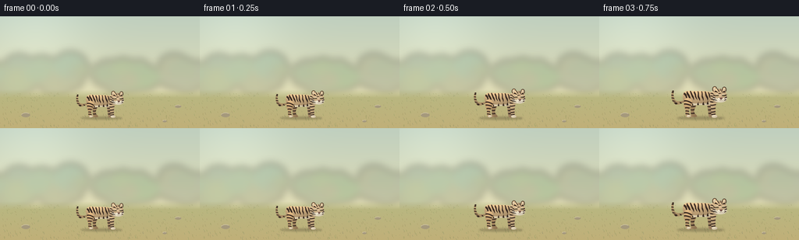
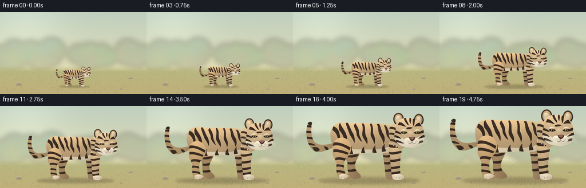

CODING AGENTS AS PIXEL WORLD MODELS
traex/GPT-6.1-Sol · instance_preservation_0053
点击播放 · 原生 RGB 像素
逐轮保存的候选
回放视频、检查图与代码变化。
每份候选均可单独播放。实际图片检查记录在下方工具轨迹中。
候选 01播放与检查图
点击播放 · 原生 RGB 像素


展开代码变化
--- 上一保存版本
+++ 本次保存版本
@@ -0,0 +1,228 @@
+from pathlib import Path
+import json, math
+import numpy as np
+from PIL import Image, ImageDraw, ImageFilter
+from artifact_io import save
+
+ROOT=Path(__file__).resolve().parent
+SPEC=json.loads((ROOT/'task_spec.json').read_text())
+S=2
+W,H=960*S,650*S
+rng=np.random.default_rng(8237)
+tiger=Image.new('RGBA',(W,H))
+
+def bez(start, commands):
+ pts=[start]; cur=start
+ for c in commands:
+ if len(c)==2:
+ pts.append(c); cur=c
+ else:
+ a,b,e=c[:2],c[2:4],c[4:6]
+ for t in np.linspace(0,1,28)[1:]:
+ u=1-t; pts.append((u**3*cur[0]+3*u*u*t*a[0]+3*u*t*t*b[0]+t**3*e[0],u**3*cur[1]+3*u*u*t*a[1]+3*u*t*t*b[1]+t**3*e[1]))
+ cur=e
+ return pts
+
+def mask_poly(pts):
+ m=Image.new('L',(W,H)); ImageDraw.Draw(m).polygon([(int(x*S),int(y*S)) for x,y in pts],fill=255); return m
+
+def ellipse(box):
+ m=Image.new('L',(W,H));ImageDraw.Draw(m).ellipse(tuple(int(v*S) for v in box),fill=255);return m
+
+def colored(mask, base, light=.18, texture=True):
+ a=np.asarray(mask); ys,xs=np.nonzero(a)
+ if not len(xs): return
+ x0,x1=xs.min(),xs.max()+1;y0,y1=ys.min(),ys.max()+1
+ yy,xx=np.mgrid[y0:y1,x0:x1]
+ xn=(xx-x0)/max(1,x1-x0);yn=(yy-y0)/max(1,y1-y0)
+ # softly lit upper left with rounded flank modeling
+ bright=1+light*(.6-yn)+.035*np.cos((xn-.35)*np.pi*2)-.055*np.sin(yn*np.pi)**2
+ if texture: bright+=rng.normal(0,.017,xx.shape)
+ col=np.zeros((*xx.shape,4),dtype=np.uint8)
+ col[:,:,:3]=np.clip(np.array(base)[None,None,:]*bright[:,:,None],0,255).astype('uint8')
+ col[:,:,3]=a[y0:y1,x0:x1]
+ tiger.alpha_composite(Image.fromarray(col),(x0,y0))
+
+def form(start,cmds,base,light=.25):
+ m=mask_poly(bez(start,cmds));colored(m,base,light);return m
+
+def patch(pts,color,clip=None):
+ m=mask_poly(pts)
+ if clip is not None: m=Image.fromarray(np.minimum(np.asarray(m),np.asarray(clip)))
+ colored(m,color,.12);return m
+
+def stripe(start,cmds,clip=None,color=(58,44,35)):
+ return patch(bez(start,cmds),color,clip)
+
+def line(pts,fill,width=1):
+ ImageDraw.Draw(tiger).line([(round(x*S),round(y*S)) for x,y in pts],fill=fill,width=max(1,round(width*S)))
+
+def fur(mask,n=2500,shade=(120,96,69),length=4):
+ a=np.asarray(mask); ys,xs=np.nonzero(a>200)
+ if not len(xs):return
+ lay=Image.new('RGBA',(W,H));d=ImageDraw.Draw(lay)
+ for j in rng.integers(0,len(xs),n):
+ x,y=xs[j]/S,ys[j]/S
+ l=rng.uniform(1,length); dx=rng.uniform(.4,1.0)*l;dy=rng.uniform(.1,.65)*l
+ col=shade+(int(rng.integers(12,40)),)
+ d.line((x*S,y*S,(x+dx)*S,(y+dy)*S),fill=col,width=1)
+ lay.putalpha(Image.fromarray(np.minimum(np.asarray(lay.getchannel('A')),a)))
+ tiger.alpha_composite(lay)
+
+# Tail arcs, with a tapered dark tip and rings.
+tailpts=bez((286,353),[(219,380,144,428,103,383),(63,344,53,268,70,210),(72,191,94,187,101,199),(94,235,91,281,111,321),(132,360,200,359,273,329),(286,353)])
+tail=mask_poly(tailpts);colored(tail,(178,149,108),.25)
+for y in [218,257,298,340]:
+ stripe((43,y),[(84,y-8,117,y+5,126,y+16),(93,y+18,76,y+7,46,y+14),(43,y)],tail)
+stripe((102,369),[(134,363,146,370,154,387),(148,397,128,401,118,394),(102,369)],tail)
+stripe((182,360),[(184,370,192,382,200,387),(216,385),(208,368),(182,360)],tail)
+stripe((66,204),[(71,178,93,179,102,199),(104,212,95,217,87,218),(66,204)],tail)
+fur(tail,700)
+# Far-side limbs, deliberately darker to establish depth.
+rearfar=form((360,339),[(401,336,435,358,427,416),(416,455,392,464,399,513),(404,540,438,549,439,574),(429,590,379,591,359,580),(350,549,342,511,346,477),(326,434,320,389,360,339)],(162,133,95))
+frontfar=form((610,343),[(646,336,671,358,666,405),(658,446,647,491,651,552),(678,560,686,577,671,588),(647,596,612,593,609,578),(603,516,598,467,588,414),(580,381,584,358,610,343)],(162,135,101))
+for m,x in [(rearfar,365),(frontfar,615)]:
+ for y in [421,469,520]:
+ stripe((x-33,y),[(x+10,y+12,x+32,y-12,x+58,y-1),(x+53,y+14,x+11,y+26,x-35,y+12),(x-33,y)],m)
+# Torso with realistic chest and haunch contours.
+body=form((228,265),[(239,207,285,188,348,199),(422,203,506,199,575,205),(625,204,678,228,704,269),(730,303,707,347,673,377),(638,414,576,415,526,406),(452,403,388,421,323,411),(265,402,223,352,228,265)],(194,164,122),.39)
+# pale underbelly
+stripe((258,354),[(336,394,470,380,529,385),(586,381,645,362,673,345),(683,385,637,416,577,416),(441,427,326,430,269,391),(258,354)],body,(220,205,174))
+# Rump and back stripes: curved, irregular, with tapered ends.
+patterns=[((247,224),[(270,228,288,252,290,276),(299,303,291,322,281,334),(281,288,265,265,241,249),(247,224)]),
+((295,200),[(307,238,333,252,342,300),(345,324,338,340,326,355),(329,304,307,271,289,251),(284,227,282,212,295,200)]),
+((345,197),[(363,221,369,252,383,271),(392,288,399,316,393,339),(383,310,369,296,361,280),(351,253,340,228,334,201),(345,197)]),
+((399,201),[(410,222,422,235,424,259),(424,289,440,310,445,331),(431,323,416,300,409,284),(410,254,393,240,390,217),(399,201)]),
+((453,202),[(478,229,456,264,477,299),(485,316,484,334,481,348),(470,322,452,307,448,287),(446,259,457,239,445,205),(453,202)]),
+((510,203),[(530,237,514,263,527,285),(537,306,538,332,529,349),(526,313,506,302,505,279),(507,248,510,229,499,207),(510,203)]),
+((561,205),[(577,223,575,255,594,280),(604,301,605,324,593,345),(591,316,576,302,570,287),(553,261,563,237,548,209),(561,205)]),
+((605,215),[(628,235,620,251,639,272),(653,291,652,313,643,328),(638,306,617,299,615,280),(608,259,611,244,597,218),(605,215)])]
+for a,b in patterns:stripe(a,b,body)
+# secondary flank stripes rising from belly
+for x,y in [(299,392),(373,410),(458,410),(535,403),(599,392)]:
+ stripe((x-15,y+8),[(x-22,y-16,x-10,y-35,x+3,y-48),(x-2,y-22,x+9,y-13,x+11,y+4),(x-15,y+8)],body)
+fur(body,9500)
+# Near hind leg: muscular upper thigh and angled hock.
+hind=form((275,309),[(314,289,355,309,367,351),(382,395,354,427,332,451),(317,476,315,514,334,551),(363,556,374,573,363,586),(340,597,290,596,282,580),(268,553,266,515,271,478),(255,452,239,422,243,385),(239,352,252,324,275,309)],(192,158,113),.32)
+stripe((243,337),[(289,326,334,353,367,371),(360,389),(307,354,278,350,240,359),(243,337)],hind)
+stripe((248,384),[(277,377,325,394,353,407),(346,419),(309,408,273,397,248,403),(248,384)],hind)
+stripe((262,442),[(290,431,324,442,345,451),(335,466),(305,452,278,453,261,458),(262,442)],hind)
+for y in [487,527]:
+ stripe((266,y),[(286,y-3,316,y+4,331,y+12),(324,y+23),(296,y+12,280,y+14,269,y+16),(266,y)],hind)
+stripe((285,561),[(308,549,336,550,354,567),(339,590,302,593,285,580),(285,561)],hind,(224,209,179))
+fur(hind,2800)
+# Near foreleg, long straight weight bearing paw.
+front=form((652,302),[(693,293,724,326,722,373),(714,419,704,470,709,542),(708,551,725,556,737,567),(749,588,715,597,680,594),(659,595,650,584,650,562),(646,510,639,468,639,427),(626,389,623,337,652,302)],(198,170,129),.31)
+stripe((631,348),[(669,356,697,342,726,351),(724,369),(684,373,654,376,631,365),(631,348)],front)
+for y in [400,452,501,538]:
+ stripe((631,y),[(657,y+9,690,y-5,720,y-7),(722,y+7),(686,y+13,657,y+26,635,y+14),(631,y)],front)
+stripe((651,559),[(675,551,709,548,730,563),(747,581,719,600,680,594),(658,588),(651,559)],front,(228,214,187))
+fur(front,3000)
+for x in [304,323,344]: line([(x,577),(x+2,587)],(118,100,78,180),1.5)
+for x in [682,702,721]: line([(x,576),(x+1,587)],(118,100,78,180),1.4)
+# Neck ruff visible behind face.
+neck=form((645,218),[(674,175,734,170,765,196),(798,221,797,278,780,316),(763,348,735,382,700,384),(692,363),(679,372),(675,351),(660,362),(657,339),(640,344),(641,314),(627,289,623,247,645,218)],(201,174,135),.28)
+for y in [230,270,315]:
+ stripe((632,y),[(660,y-9,686,y+5,708,y+26),(704,y+39),(678,y+17,654,y+9,632,y+10),(632,y)],neck)
+fur(neck,3000)
+# Round ears: black rims, tan and creamy inner fur.
+colored(ellipse((661,130,733,216)),(64,49,37),.3)
+colored(ellipse((669,139,725,208)),(186,155,115),.3)
+colored(ellipse((676,151,714,201)),(217,200,169),.2)
+colored(ellipse((804,137,870,220)),(59,46,36),.3)
+colored(ellipse((811,147,862,209)),(184,155,117),.3)
+colored(ellipse((821,158,851,203)),(217,199,169),.2)
+# Head, broad forehead and flared striped cheeks.
+head=form((696,181),[(735,157,797,162,829,183),(861,204,874,239,870,272),(881,293,880,316,865,340),(847,361,807,375,767,368),(728,368,693,353,679,326),(662,304,666,275,678,251),(677,217,679,198,696,181)],(207,178,137),.26)
+# cheek and chin ivory zones
+stripe((679,284),[(706,288,729,319,765,324),(795,322,840,292,872,281),(885,324,858,365,813,373),(758,380,701,365,679,334),(670,310),(679,284)],head,(227,216,191))
+# Crown stripes, conserved for entire growth.
+stripe((749,162),[(748,187,769,199,766,218),(758,211,742,197,734,169),(749,162)],head)
+stripe((780,165),[(788,179,781,193,780,206),(772,199,771,181,773,164),(780,165)],head)
+stripe((813,174),[(805,194,811,210,799,221),(798,203,790,193,799,169),(813,174)],head)
+stripe((702,194),[(726,195,738,217,751,226),(735,226,713,213,691,215),(702,194)],head)
+stripe((842,198),[(823,200,813,216,806,226),(825,222,840,219,857,225),(842,198)],head)
+stripe((750,235),[(762,228,783,228,799,234),(785,239,771,244,756,243),(750,235)],head)
+# cheeks stripe radiate down and out
+for a,b in [((672,252),[(690,254,709,264,718,279),(705,277,686,271,674,266),(672,252)]),((670,283),[(690,287,709,297,717,311),(697,305,680,302,669,298),(670,283)]),((679,317),[(700,319,722,332,737,343),(715,341,691,336,681,331),(679,317)]),((871,251),[(851,252,840,268,828,278),(846,273,862,273,873,266),(871,251)]),((877,282),[(856,285,845,299,832,309),(854,307,868,300,880,298),(877,282)]),((867,322),[(846,319,827,335,817,344),(842,341,856,338,865,334),(867,322)])]: stripe(a,b,head)
+fur(head,5200,length=3)
+# expressive but natural narrowed eyes and dark eyeliner, cream brows
+for start,cmd in [((712,252),[(725,242,742,242,756,254),(739,249,726,251,713,260),(712,252)]),((804,254),[(816,243,838,242,849,253),(832,250,817,253,806,260),(804,254)])]:
+ stripe(start,cmd,head,(235,221,192))
+stripe((711,264),[(726,256,746,257,758,267),(749,278,727,278,715,270),(711,264)],head,(43,38,30))
+stripe((803,267),[(816,256,837,257,849,263),(840,276,817,279,807,272),(803,267)],head,(43,38,30))
+colored(ellipse((726,260,744,274)),(157,137,68),.1)
+colored(ellipse((817,260,835,274)),(157,137,68),.1)
+colored(ellipse((733,261,739,274)),(21,26,19),0)
+colored(ellipse((823,261,829,274)),(21,26,19),0)
+colored(ellipse((730,262,734,265)),(255,246,218),0)
+colored(ellipse((820,262,824,265)),(255,246,218),0)
+# Nose bridge warm beige, muzzle bulbs and chin.
+form((761,260),[(771,254,787,255,798,262),(801,282,811,295,804,309),(789,319,769,318,758,305),(758,287,764,278,761,260)],(205,176,139),.2)
+colored(ellipse((734,303,789,350)),(240,229,204),.16)
+colored(ellipse((781,302,840,350)),(237,226,201),.16)
+form((770,301),[(783,296,800,297,813,301),(811,313,800,324,790,326),(780,322,773,314,770,301)],(74,47,41),.16)
+stripe((776,302),[(786,299,801,300,807,303),(802,311,795,315,790,315),(782,311),(776,302)],None,(154,105,91))
+line([(790,324),(790,336),(779,342),(765,340)],(65,50,43,255),2)
+line([(790,336),(804,342),(816,338)],(65,50,43,255),2)
+# Symmetric follicles and delicate whiskers.
+for cx in [752,810]:
+ for dx,dy in [(0,0),(8,3),(1,9),(13,11),(6,17)]:
+ x=cx+dx;y=317+dy
+ colored(ellipse((x-1.2,y-1.2,x+1.2,y+1.2)),(101,86,68),0)
+for i in range(5):
+ line(bez((754,323+i*3),[(727,321+i*5,706,318+i*8,686,314+i*10)]),(249,243,224,190),.8)
+ line(bez((822,321+i*3),[(846,316+i*5,871,310+i*7,895,308+i*10)]),(249,243,224,190),.8)
+# Crop stable master silhouette.
+bbox=tiger.getbbox(); master=tiger.crop((bbox[0]-8,bbox[1]-8,bbox[2]+8,bbox[3]+8))
+master.save(ROOT/'tiger_master.png')
+
+# Stationary sunlit clearing. Render at 3x for clean subpixel growth.
+R=3;sw,sh=SPEC['width']*R,SPEC['height']*R
+Y,X=np.mgrid[0:sh,0:sw]; yy=Y/R;xx=X/R
+bg=np.zeros((sh,sw,3),float)
+for c,(top,bot) in enumerate([(191,227),(207,222),(191,181)]): bg[:,:,c]=top+(bot-top)*np.minimum(yy/104,1)
+bg+=np.exp(-((xx-46)**2+(yy-25)**2)/4500)[:,:,None]*15
+bg=Image.fromarray(np.clip(bg,0,255).astype('uint8'))
+land=Image.new('RGBA',(sw,sh));d=ImageDraw.Draw(land)
+brng=np.random.default_rng(120)
+# distant trees, diffuse silhouettes
+for _ in range(42):
+ x=float(brng.uniform(-20,275));y=float(brng.uniform(65,96)); rad=float(brng.uniform(8,23))
+ color=(int(brng.uniform(125,153)),int(brng.uniform(149,168)),int(brng.uniform(117,141)),100)
+ d.ellipse(((x-rad)*R,(y-rad*.9)*R,(x+rad)*R,(y+rad*.7)*R),fill=color)
+land=land.filter(ImageFilter.GaussianBlur(5*R));bg=Image.alpha_composite(bg.convert('RGBA'),land)
+# sandy muted grass, fixed scale cues
+ground=np.zeros((sh,sw,4),np.uint8)
+z=np.clip((yy-92)/50,0,1)
+for c,(a,b) in enumerate([(183,192),(185,176),(131,121)]):ground[:,:,c]=np.clip(a+(b-a)*z+brng.normal(0,.7,(sh,sw)),0,255)
+ground[:,:,3]=np.clip((yy-94)*24,0,255)
+bg=Image.alpha_composite(bg,Image.fromarray(ground))
+d=ImageDraw.Draw(bg)
+for _ in range(440):
+ x=brng.uniform(0,256); y=brng.uniform(99,144);l=brng.uniform(.8,3.7)*(y-84)/60
+ col=(int(brng.uniform(140,171)),int(brng.uniform(145,162)),int(brng.uniform(93,113)),110)
+ d.line((x*R,y*R,(x-.7)*R,(y-l)*R),fill=col,width=1)
+# A few unmoving rocks emphasize true size change rather than camera zoom.
+for x,y,rx,ry in [(33,127,5.5,2.7),(228,116,4,1.9),(211,135,2.6,1.4)]:
+ d.ellipse(((x-rx)*R,(y-ry)*R,(x+rx)*R,(y+ry)*R),fill=(165,153,124,255))
+ d.arc(((x-rx)*R,(y-ry)*R,(x+rx)*R,(y+ry)*R),190,320,fill=(211,200,167,255),width=2)
+frames=[]
+for i in range(SPEC['frames']):
+ t=i/(SPEC['frames']-1)
+ # gentle ease-in/out, uninterrupted change from miniature to imposing tiger
+ e=t*t*(3-2*t)
+ width=63+161*e
+ height=width*master.height/master.width
+ center=129
+ bottom=131
+ scene=bg.copy()
+ shadow=Image.new('RGBA',(sw,sh));sd=ImageDraw.Draw(shadow)
+ sd.ellipse(((center-width*.40)*R,(bottom-height*.042)*R,(center+width*.43)*R,(bottom+height*.045)*R),fill=(70,62,42,78))
+ shadow=shadow.filter(ImageFilter.GaussianBlur((1.1+1.5*e)*R))
+ scene=Image.alpha_composite(scene,shadow)
+ sprite=master.resize((round(width*R),round(height*R)),Image.Resampling.LANCZOS)
+ scene.alpha_composite(sprite,(round((center-width/2)*R),round((bottom-height)*R)))
+ frames.append(np.array(scene.convert('RGB').resize((SPEC['width'],SPEC['height']),Image.Resampling.LANCZOS),dtype=np.uint8))
+save(np.stack(frames),ROOT)
+print('Saved',len(frames),'RGB frames')
可观测工具轨迹
实际执行的命令与返回图片。
命令 1exit 0
/bin/bash -lc 'ls -la && cat prompt.txt && cat GENERATION_RULES.md && cat task_spec.json'
命令 2exit 0
/bin/bash -lc 'cat artifact_io.py'
命令 3exit 0
/bin/bash -lc "cat > generate.py <<'PY'
from pathlib import Path
import json, math
import numpy as np
from PIL import Image, ImageDraw, ImageFilter
from artifact_io import save
ROOT=Path(__file__).resolve().parent
SPEC=json.loads((ROOT/'task_spec.json').read_text())
S=2
W,H=960*S,650*S
rng=np.random.default_rng(8237)
tiger=Image.new('RGBA',(W,H))
def bez(start, commands):
pts=[start]; cur=start
for c in commands:
if len(c)==2:
pts.append(c); cur=c
else:
a,b,e=c[:2],c[2:4],c[4:6]
for t in np.linspace(0,1,28)[1:]:
u=1-t; pts.append((u**3*cur[0]+3*u*u*t*a[0]+3*u*t*t*b[0]+t**3*e[0],u**3*cur[1]+3*u*u*t*a[1]+3*u*t*t*b[1]+t**3*e[1]))
cur=e
return pts
def mask_poly(pts):
m=Image.new('L',(W,H)); ImageDraw.Draw(m).polygon([(int(x*S),int(y*S)) for x,y in pts],fill=255); return m
def ellipse(box):
m=Image.new('L',(W,H));ImageDraw.Draw(m).ellipse(tuple(int(v*S) for v in box),fill=255);return m
def colored(mask, base, light=.18, texture=True):
a=np.asarray(mask); ys,xs=np.nonzero(a)
if not len(xs): return
x0,x1=xs.min(),xs.max()+1;y0,y1=ys.min(),ys.max()+1
yy,xx=np.mgrid[y0:y1,x0:x1]
xn=(xx-x0)/max(1,x1-x0);yn=(yy-y0)/max(1,y1-y0)
# softly lit upper left with rounded flank modeling
bright=1+light*(.6-yn)+.035*np.cos((xn-.35)*np.pi*2)-.055*np.sin(yn*np.pi)**2
if texture: bright+=rng.normal(0,.017,xx.shape)
col=np.zeros((*xx.shape,4),dtype=np.uint8)
col[:,:,:3]=np.clip(np.array(base)[None,None,:]*bright[:,:,None],0,255).astype('uint8')
col[:,:,3]=a[y0:y1,x0:x1]
tiger.alpha_composite(Image.fromarray(col),(x0,y0))
def form(start,cmds,base,light=.25):
m=mask_poly(bez(start,cmds));colored(m,base,light);return m
def patch(pts,color,clip=None):
m=mask_poly(pts)
if clip is not None: m=Image.fromarray(np.minimum(np.asarray(m),np.asarray(clip)))
colored(m,color,.12);return m
def stripe(start,cmds,clip=None,color=(58,44,35)):
return patch(bez(start,cmds),color,clip)
def line(pts,fill,width=1):
ImageDraw.Draw(tiger).line([(round(x*S),round(y*S)) for x,y in pts],fill=fill,width=max(1,round(width*S)))
def fur(mask,n=2500,shade=(120,96,69),length=4):
a=np.asarray(mask); ys,xs=np.nonzero(a>200)
if not len(xs):return
lay=Image.new('RGBA',(W,H));d=ImageDraw.Draw(lay)
for j in rng.integers(0,len(xs),n):
x,y=xs[j]/S,ys[j]/S
l=rng.uniform(1,length); dx=rng.uniform(.4,1.0)*l;dy=rng.uniform(.1,.65)*l
col=shade+(int(rng.integers(12,40)),)
d.line((x*S,y*S,(x+dx)*S,(y+dy)*S),fill=col,width=1)
lay.putalpha(Image.fromarray(np.minimum(np.asarray(lay.getchannel('A')),a)))
tiger.alpha_composite(lay)
# Tail arcs, with a tapered dark tip and rings.
tailpts=bez((286,353),[(219,380,144,428,103,383),(63,344,53,268,70,210),(72,191,94,187,101,199),(94,235,91,281,111,321),(132,360,200,359,273,329),(286,353)])
tail=mask_poly(tailpts);colored(tail,(178,149,108),.25)
for y in [218,257,298,340]:
stripe((43,y),[(84,y-8,117,y+5,126,y+16),(93,y+18,76,y+7,46,y+14),(43,y)],tail)
stripe((102,369),[(134,363,146,370,154,387),(148,397,128,401,118,394),(102,369)],tail)
stripe((182,360),[(184,370,192,382,200,387),(216,385),(208,368),(182,360)],tail)
stripe((66,204),[(71,178,93,179,102,199),(104,212,95,217,87,218),(66,204)],tail)
fur(tail,700)
# Far-side limbs, deliberately darker to establish depth.
rearfar=form((360,339),[(401,336,435,358,427,416),(416,455,392,464,399,513),(404,540,438,549,439,574),(429,590,379,591,359,580),(350,549,342,511,346,477),(326,434,320,389,360,339)],(162,133,95))
frontfar=form((610,343),[(646,336,671,358,666,405),(658,446,647,491,651,552),(678,560,686,577,671,588),(647,596,612,593,609,578),(603,516,598,467,588,414),(580,381,584,358,610,343)],(162,135,101))
for m,x in [(rearfar,365),(frontfar,615)]:
for y in [421,469,520]:
stripe((x-33,y),[(x+10,y+12,x+32,y-12,x+58,y-1),(x+53,y+14,x+11,y+26,x-35,y+12),(x-33,y)],m)
# Torso with realistic chest and haunch contours.
body=form((228,265),[(239,207,285,188,348,199),(422,203,506,199,575,205),(625,204,678,228,704,269),(730,303,707,347,673,377),(638,414,576,415,526,406),(452,403,388,421,323,411),(265,402,223,352,228,265)],(194,164,122),.39)
# pale underbelly
stripe((258,354),[(336,394,470,380,529,385),(586,381,645,362,673,345),(683,385,637,416,577,416),(441,427,326,430,269,391),(258,354)],body,(220,205,174))
# Rump and back stripes: curved, irregular, with tapered ends.
patterns=[((247,224),[(270,228,288,252,290,276),(299,303,291,322,281,334),(281,288,265,265,241,249),(247,224)]),
((295,200),[(307,238,333,252,342,300),(345,324,338,340,326,355),(329,304,307,271,289,251),(284,227,282,212,295,200)]),
((345,197),[(363,221,369,252,383,271),(392,288,399,316,393,339),(383,310,369,296,361,280),(351,253,340,228,334,201),(345,197)]),
((399,201),[(410,222,422,235,424,259),(424,289,440,310,445,331),(431,323,416,300,409,284),(410,254,393,240,390,217),(399,201)]),
((453,202),[(478,229,456,264,477,299),(485,316,484,334,481,348),(470,322,452,307,448,287),(446,259,457,239,445,205),(453,202)]),
((510,203),[(530,237,514,263,527,285),(537,306,538,332,529,349),(526,313,506,302,505,279),(507,248,510,229,499,207),(510,203)]),
((561,205),[(577,223,575,255,594,280),(604,301,605,324,593,345),(591,316,576,302,570,287),(553,261,563,237,548,209),(561,205)]),
((605,215),[(628,235,620,251,639,272),(653,291,652,313,643,328),(638,306,617,299,615,280),(608,259,611,244,597,218),(605,215)])]
for a,b in patterns:stripe(a,b,body)
# secondary flank stripes rising from belly
for x,y in [(299,392),(373,410),(458,410),(535,403),(599,392)]:
stripe((x-15,y+8),[(x-22,y-16,x-10,y-35,x+3,y-48),(x-2,y-22,x+9,y-13,x+11,y+4),(x-15,y+8)],body)
fur(body,9500)
# Near hind leg: muscular upper thigh and angled hock.
hind=form((275,309),[(314,289,355,309,367,351),(382,395,354,427,332,451),(317,476,315,514,334,551),(363,556,374,573,363,586),(340,597,290,596,282,580),(268,553,266,515,271,478),(255,452,239,422,243,385),(239,352,252,324,275,309)],(192,158,113),.32)
stripe((243,337),[(289,326,334,353,367,371),(360,389),(307,354,278,350,240,359),(243,337)],hind)
stripe((248,384),[(277,377,325,394,353,407),(346,419),(309,408,273,397,248,403),(248,384)],hind)
stripe((262,442),[(290,431,324,442,345,451),(335,466),(305,452,278,453,261,458),(262,442)],hind)
for y in [487,527]:
stripe((266,y),[(286,y-3,316,y+4,331,y+12),(324,y+23),(296,y+12,280,y+14,269,y+16),(266,y)],hind)
stripe((285,561),[(308,549,336,550,354,567),(339,590,302,593,285,580),(285,561)],hind,(224,209,179))
fur(hind,2800)
# Near foreleg, long straight weight bearing paw.
front=form((652,302),[(693,293,724,326,722,373),(714,419,704,470,709,542),(708,551,725,556,737,567),(749,588,715,597,680,594),(659,595,650,584,650,562),(646,510,639,468,639,427),(626,389,623,337,652,302)],(198,170,129),.31)
stripe((631,348),[(669,356,697,342,726,351),(724,369),(684,373,654,376,631,365),(631,348)],front)
for y in [400,452,501,538]:
stripe((631,y),[(657,y+9,690,y-5,720,y-7),(722,y+7),(686,y+13,657,y+26,635,y+14),(631,y)],front)
stripe((651,559),[(675,551,709,548,730,563),(747,581,719,600,680,594),(658,588),(651,559)],front,(228,214,187))
fur(front,3000)
for x in [304,323,344]: line([(x,577),(x+2,587)],(118,100,78,180),1.5)
for x in [682,702,721]: line([(x,576),(x+1,587)],(118,100,78,180),1.4)
# Neck ruff visible behind face.
neck=form((645,218),[(674,175,734,170,765,196),(798,221,797,278,780,316),(763,348,735,382,700,384),(692,363),(679,372),(675,351),(660,362),(657,339),(640,344),(641,314),(627,289,623,247,645,218)],(201,174,135),.28)
for y in [230,270,315]:
stripe((632,y),[(660,y-9,686,y+5,708,y+26),(704,y+39),(678,y+17,654,y+9,632,y+10),(632,y)],neck)
fur(neck,3000)
# Round ears: black rims, tan and creamy inner fur.
colored(ellipse((661,130,733,216)),(64,49,37),.3)
colored(ellipse((669,139,725,208)),(186,155,115),.3)
colored(ellipse((676,151,714,201)),(217,200,169),.2)
colored(ellipse((804,137,870,220)),(59,46,36),.3)
colored(ellipse((811,147,862,209)),(184,155,117),.3)
colored(ellipse((821,158,851,203)),(217,199,169),.2)
# Head, broad forehead and flared striped cheeks.
head=form((696,181),[(735,157,797,162,829,183),(861,204,874,239,870,272),(881,293,880,316,865,340),(847,361,807,375,767,368),(728,368,693,353,679,326),(662,304,666,275,678,251),(677,217,679,198,696,181)],(207,178,137),.26)
# cheek and chin ivory zones
stripe((679,284),[(706,288,729,319,765,324),(795,322,840,292,872,281),(885,324,858,365,813,373),(758,380,701,365,679,334),(670,310),(679,284)],head,(227,216,191))
# Crown stripes, conserved for entire growth.
stripe((749,162),[(748,187,769,199,766,218),(758,211,742,197,734,169),(749,162)],head)
stripe((780,165),[(788,179,781,193,780,206),(772,199,771,181,773,164),(780,165)],head)
stripe((813,174),[(805,194,811,210,799,221),(798,203,790,193,799,169),(813,174)],head)
stripe((702,194),[(726,195,738,217,751,226),(735,226,713,213,691,215),(702,194)],head)
stripe((842,198),[(823,200,813,216,806,226),(825,222,840,219,857,225),(842,198)],head)
stripe((750,235),[(762,228,783,228,799,234),(785,239,771,244,756,243),(750,235)],head)
# cheeks stripe radiate down and out
for a,b in [((672,252),[(690,254,709,264,718,279),(705,277,686,271,674,266),(672,252)]),((670,283),[(690,287,709,297,717,311),(697,305,680,302,669,298),(670,283)]),((679,317),[(700,319,722,332,737,343),(715,341,691,336,681,331),(679,317)]),((871,251),[(851,252,840,268,828,278),(846,273,862,273,873,266),(871,251)]),((877,282),[(856,285,845,299,832,309),(854,307,868,300,880,298),(877,282)]),((867,322),[(846,319,827,335,817,344),(842,341,856,338,865,334),(867,322)])]: stripe(a,b,head)
fur(head,5200,length=3)
# expressive but natural narrowed eyes and dark eyeliner, cream brows
for start,cmd in [((712,252),[(725,242,742,242,756,254),(739,249,726,251,713,260),(712,252)]),((804,254),[(816,243,838,242,849,253),(832,250,817,253,806,260),(804,254)])]:
stripe(start,cmd,head,(235,221,192))
stripe((711,264),[(726,256,746,257,758,267),(749,278,727,278,715,270),(711,264)],head,(43,38,30))
stripe((803,267),[(816,256,837,257,849,263),(840,276,817,279,807,272),(803,267)],head,(43,38,30))
colored(ellipse((726,260,744,274)),(157,137,68),.1)
colored(ellipse((817,260,835,274)),(157,137,68),.1)
colored(ellipse((733,261,739,274)),(21,26,19),0)
colored(ellipse((823,261,829,274)),(21,26,19),0)
colored(ellipse((730,262,734,265)),(255,246,218),0)
colored(ellipse((820,262,824,265)),(255,246,218),0)
# Nose bridge warm beige, muzzle bulbs and chin.
form((761,260),[(771,254,787,255,798,262),(801,282,811,295,804,309),(789,319,769,318,758,305),(758,287,764,278,761,260)],(205,176,139),.2)
colored(ellipse((734,303,789,350)),(240,229,204),.16)
colored(ellipse((781,302,840,350)),(237,226,201),.16)
form((770,301),[(783,296,800,297,813,301),(811,313,800,324,790,326),(780,322,773,314,770,301)],(74,47,41),.16)
stripe((776,302),[(786,299,801,300,807,303),(802,311,795,315,790,315),(782,311),(776,302)],None,(154,105,91))
line([(790,324),(790,336),(779,342),(765,340)],(65,50,43,255),2)
line([(790,336),(804,342),(816,338)],(65,50,43,255),2)
# Symmetric follicles and delicate whiskers.
for cx in [752,810]:
for dx,dy in [(0,0),(8,3),(1,9),(13,11),(6,17)]:
x=cx+dx;y=317+dy
colored(ellipse((x-1.2,y-1.2,x+1.2,y+1.2)),(101,86,68),0)
for i in range(5):
line(bez((754,323+i*3),[(727,321+i*5,706,318+i*8,686,314+i*10)]),(249,243,224,190),.8)
line(bez((822,321+i*3),[(846,316+i*5,871,310+i*7,895,308+i*10)]),(249,243,224,190),.8)
# Crop stable master silhouette.
bbox=tiger.getbbox(); master=tiger.crop((bbox[0]-8,bbox[1]-8,bbox[2]+8,bbox[3]+8))
master.save(ROOT/'tiger_master.png')
# Stationary sunlit clearing. Render at 3x for clean subpixel growth.
R=3;sw,sh=SPEC['width']*R,SPEC['height']*R
Y,X=np.mgrid[0:sh,0:sw]; yy=Y/R;xx=X/R
bg=np.zeros((sh,sw,3),float)
for c,(top,bot) in enumerate([(191,227),(207,222),(191,181)]): bg[:,:,c]=top+(bot-top)*np.minimum(yy/104,1)
bg+=np.exp(-((xx-46)**2+(yy-25)**2)/4500)[:,:,None]*15
bg=Image.fromarray(np.clip(bg,0,255).astype('uint8'))
land=Image.new('RGBA',(sw,sh));d=ImageDraw.Draw(land)
brng=np.random.default_rng(120)
# distant trees, diffuse silhouettes
for _ in range(42):
x=float(brng.uniform(-20,275));y=float(brng.uniform(65,96)); rad=float(brng.uniform(8,23))
color=(int(brng.uniform(125,153)),int(brng.uniform(149,168)),int(brng.uniform(117,141)),100)
d.ellipse(((x-rad)*R,(y-rad*.9)*R,(x+rad)*R,(y+rad*.7)*R),fill=color)
land=land.filter(ImageFilter.GaussianBlur(5*R));bg=Image.alpha_composite(bg.convert('RGBA'),land)
# sandy muted grass, fixed scale cues
ground=np.zeros((sh,sw,4),np.uint8)
z=np.clip((yy-92)/50,0,1)
for c,(a,b) in enumerate([(183,192),(185,176),(131,121)]):ground[:,:,c]=np.clip(a+(b-a)*z+brng.normal(0,.7,(sh,sw)),0,255)
ground[:,:,3]=np.clip((yy-94)*24,0,255)
bg=Image.alpha_composite(bg,Image.fromarray(ground))
d=ImageDraw.Draw(bg)
for _ in range(440):
x=brng.uniform(0,256); y=brng.uniform(99,144);l=brng.uniform(.8,3.7)*(y-84)/60
col=(int(brng.uniform(140,171)),int(brng.uniform(145,162)),int(brng.uniform(93,113)),110)
d.line((x*R,y*R,(x-.7)*R,(y-l)*R),fill=col,width=1)
# A few unmoving rocks emphasize true size change rather than camera zoom.
for x,y,rx,ry in [(33,127,5.5,2.7),(228,116,4,1.9),(211,135,2.6,1.4)]:
d.ellipse(((x-rx)*R,(y-ry)*R,(x+rx)*R,(y+ry)*R),fill=(165,153,124,255))
d.arc(((x-rx)*R,(y-ry)*R,(x+rx)*R,(y+ry)*R),190,320,fill=(211,200,167,255),width=2)
frames=[]
for i in range(SPEC['frames']):
t=i/(SPEC['frames']-1)
# gentle ease-in/out, uninterrupted change from miniature to imposing tiger
e=t*t*(3-2*t)
width=63+161*e
height=width*master.height/master.width
center=129
bottom=131
scene=bg.copy()
shadow=Image.new('RGBA',(sw,sh));sd=ImageDraw.Draw(shadow)
sd.ellipse(((center-width*.40)*R,(bottom-height*.042)*R,(center+width*.43)*R,(bottom+height*.045)*R),fill=(70,62,42,78))
shadow=shadow.filter(ImageFilter.GaussianBlur((1.1+1.5*e)*R))
scene=Image.alpha_composite(scene,shadow)
sprite=master.resize((round(width*R),round(height*R)),Image.Resampling.LANCZOS)
scene.alpha_composite(sprite,(round((center-width/2)*R),round((bottom-height)*R)))
frames.append(np.array(scene.convert('RGB').resize((SPEC['width'],SPEC['height']),Image.Resampling.LANCZOS),dtype=np.uint8))
save(np.stack(frames),ROOT)
print('Saved',len(frames),'RGB frames')
PY
python generate.py"命令 4exit 0
/bin/bash -lc "python - <<'PY'
import numpy as np
from pathlib import Path
p=np.load('pixels.npz')['pixels']
print('Packed RGB tensor:',p.shape)
print('PNG frames:',len(list(Path('frames').glob('*.png'))))
print('Player exists:',Path('index.html').is_file())
PY"视觉工具实际返回图片 1

保存候选 1 份；完成命令 4 次；可验证图片返回 1 张。原始 API 响应与完整日志保留在本地。